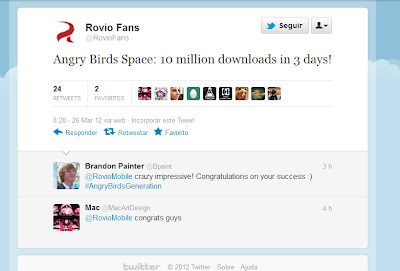
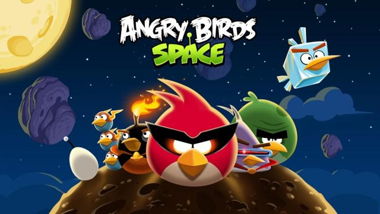

Angry Birds Space, o novo fenômeno(){
Games
Por: Tassyo Tchesco !!!
A luta agora é no espaço!

Imagem do Twitter da Rovio.
O novo fenômeno da empresa filandesa Rovio está dando o que falar. Lançado no dia 22 de março deste ano, Angry Birds Space atingiu a meta de 10 milhões de downloads em apenas 3 dias. Divulgado pelo Twitter ofocial da empresa, o novo game da empresa já superou seus antecessores Angry Birds e Angry Birds Rio que atingiram a mesma meta com 10 dias. Segundo Peter Vesterbacka, diretor de marketing da Rovio, este é o título mais importante da empresa.
A história continua sendo baseada nos pássaros em busca de seus ovos, só que desta vez eles se veem em um lugar um pouco mais distante: no espaço. O ambiente de gravidade zero e com 60 níveis diferentes traz muitas novidades em relação a versões anteriores, como seis personagens inéditos, e tiros que farão o jogador explorar toda a física do jogo e a gravidade dos planetas.

Um joguinho de gente grande!
Em matéria de física e matemática, a Rovio não abriu mão de fazer um game bem realista. Com uma parceria com a NASA (agência espacial norte-americana), o jogo foi bem estudado e os cálculos físicos do jogo são bem interessantes. A própria NASA fez um anúncio do jogo, demonstrando o quão poderoso é a marca dos pássaros nervosos.
Plataforma
A disputa dos pássaros com os porcos está disponível para iOS, Android, PC e Mac.
}